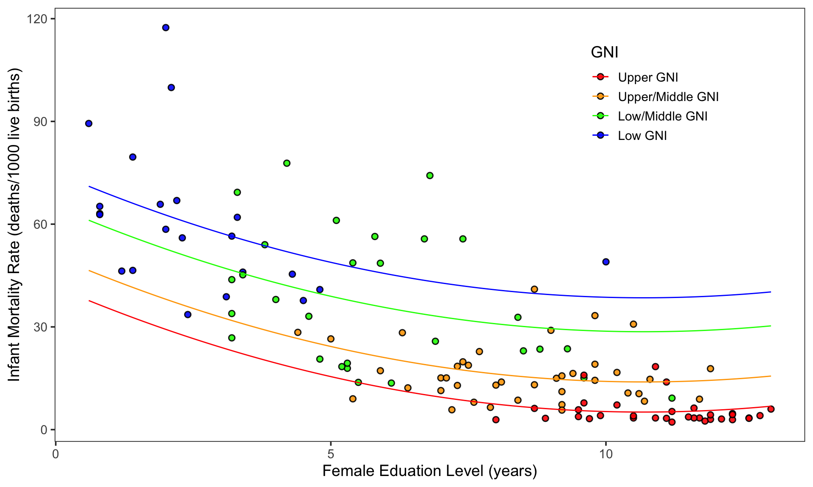

Variation in Infant Mortality Rates Across Countries
Linear Relationship
To better understand the causes of variation in infant mortality rates across countries, the number of infant deaths before the age of one per 1000 live births (infant mortality rate) was linearly regressed on the average number of years of formal education for a woman (female education level) for 124 countries (\(\mathrm{r}^2 = 0.606\)). The figure below depicts this relationship and is followed by the fitted least squares regression equation for this model:
\[ \begin{split} \hat{\mathrm{Infant~Mortality~Rate}_i} &= 63.37- 3.6(\mathrm{Female~Education~Level}_i) - 17.58(\mathrm{GNI}_i) \end{split} \]
These results suggest that a one-unit change in female education level (or an additional year of formal education) is associated with a decreased infant mortality rate by 3.60 (or 3.60 less infant deaths before their first birthday, per 1000 live births). It also suggests that countries with a high GNI have a lower infant mortality rate by 17.58.
Quadratic Relationship
An investigation of the standardized residuals for this linear model suggest that a linear model may not accurately represent the data and that a quadratic function may be better. Therefore, an additional model positing a quadratic effect of female education level on infant mortality rate was created, controlling for each GNI level. This model was found to better represent the data than the linear model (\(\mathrm{r}^2 = 0.711\)). Again, the equation and a figure for this regression are provided below.

\[ \begin{align} \hat{\mathrm{Infant~Mortality~Rate}_i} &= 75.02 - 6.84(\mathrm{Female~Education~Level}_i) + 0.32(\mathrm{Female~Education~Level}_i^2) \nonumber \\ &\quad - 33.37(\mathrm{Upper~GNI}_i) - 24.57(\mathrm{Upper/Middle~GNI}_i) - 9.91(\mathrm{Low/Middle~GNI}_i) \end{align} \]
According to this model, female education has an effect on infant mortality rate, controlling for GNI level. The effect of female education level in this model is not as straight-forward as its effect in the linear model. The effect depends on the level of education, as in the effect of female education level on infant mortality decreases as female education level increases. The effect of female education level on infant mortality rate is greater at lower levels of education than it is at higher levels (i.e., there is a greater effect at education level 1 than at education level 12). This can be interpreted to mean that the initial years of female education are more critical to decreasing infant mortality than later years are. Education still has an effect in these later stages but its effect diminishes.
Again, it is found that a high country GNI level is associated with a lower infant mortality rate and vice versa.